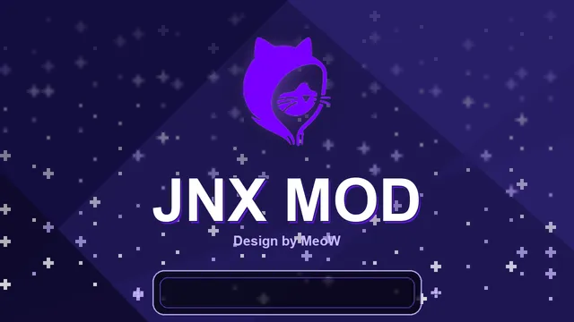

O JNX é o pacote gratuito para o seu Switch
Tudo em português: traduções de jogos, macetes, temas, apps e o desbloqueio completo. Baseado no CNX do Costela BR, pensado para quem não quer complicação.

O que vem no pacote
Atmosphère 1.12.2
Custom firmware oficial, com tela de boot e splash do JNX.
hekate 6.5.5
Bootloader traduzido, com opções de EmuNAND, SysNAND e sistema original.
+430 traduções
Jogue em português. Instale e atualize traduções pelo JNX Updater.
Macetes da comunidade
60 FPS, resolução, cheats. Baixe por jogo ou o banco inteiro.
JNX Updater
O app central do pacote: traduções, macetes, temas e atualizações, tudo num lugar só.
Control PS-5
Use o controle de PS5 no Switch por Bluetooth, sem adaptador.
MeoWGuard
Instale jogos pelo navegador do computador, direto no Switch pelo cabo USB.
Tudo em português
Menus, overlays, bootloader e o JNX Updater, pensados para o público brasileiro.
Uma alternativa gratuita e democrática
O JNX é um pacote de desbloqueio para N-Switch, baseado no CNX do Costela BR. Nosso intuito não é substituir ou competir com o CNX, mas sim trazer uma segunda alternativa, mais fácil, simples e democrática para o usuário final.
O pacote é gratuito e nasceu para ajudar a comunidade, em especial o público brasileiro, a usar o desbloqueio sem precisar entender termos técnicos.
Como instalar
1. Baixe o pacote
Clique em "Baixar o pacote JNX" e pegue o arquivo .zip na página do GitHub.
2. Extraia no cartão SD
Descompacte o .zip na raiz do cartão SD do seu N-Switch.
3. Ligue o Switch
Injete o payload (pelo modchip ou pelo PC) e o JNX cuida do resto.
O JNX é livre de pirataria
O pacote não inclui jogos, ROMs, chaves de criptografia, nem ferramentas voltadas para download de conteúdo pirata. Use o desbloqueio com responsabilidade.